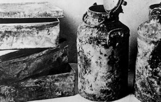
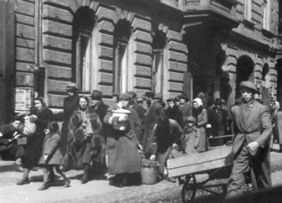
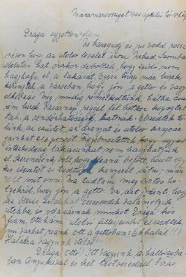
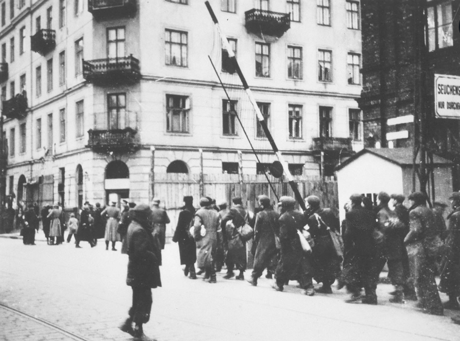
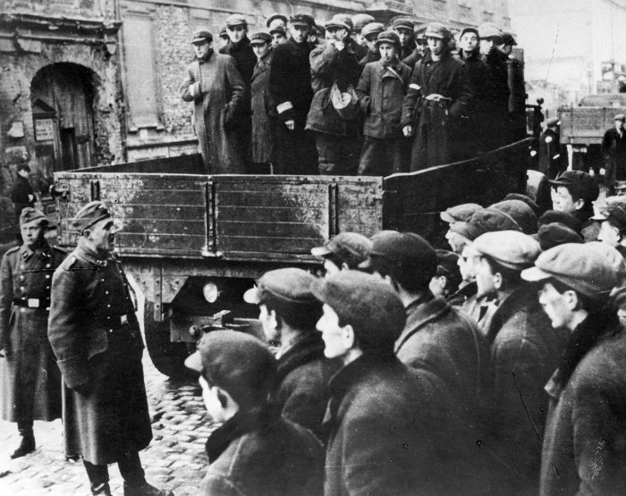

Historical artifacts help us understand the lives of the people who lived in the Warsaw Ghetto. Photographs, documents, letters, and personal items provide important evidence about this period of history.
The Ringelblum Archive

The Ringelblum Archive was a secret collection of documents created inside the Warsaw Ghetto. It included diaries, reports, letters, and testimonies written by Jewish residents.
The archive was hidden underground during the war and later discovered. Today it is one of the most important historical sources about life in the ghetto.
Historical Photographs

Photographs taken during the Holocaust provide visual evidence of conditions inside the Warsaw Ghetto. They show daily life, crowded streets, and the effects of Nazi persecution.
Letters and Personal Documents

Letters, identity cards, and personal documents tell the stories of individual people and families. These objects help historians learn about the experiences of those who lived through the Holocaust.
Image Gallery




Explore Historical Objects
Ringelblum Archive
The Ringelblum Archive was a secret collection of documents created inside the Warsaw Ghetto.
Historical Photographs
Historical photographs provide visual evidence of life in the ghetto.
Personal Letters
Letters and documents help historians understand individual experiences during the Holocaust.
Learn More
Read more about the Ringelblum Archive on Wikipedia: